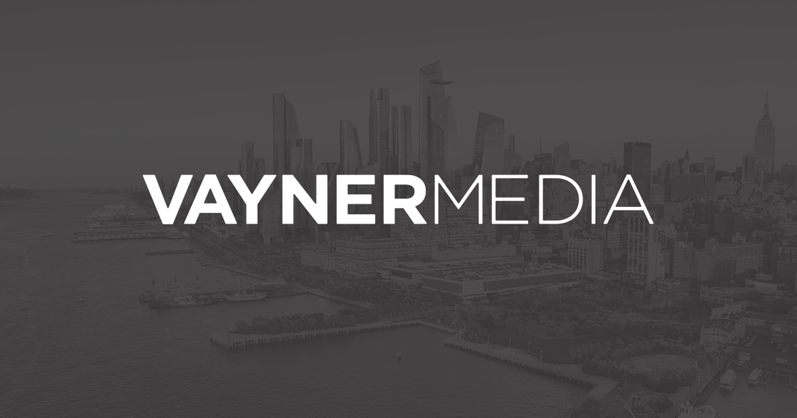

"I'll hold on to the world tight some day. I've got one finger on it now; that's a beginning." - Ray Bradbury, "Fahrenheit 451"
In five years, it will be the year 2025. I will be 24 years old. I will have been an alum of Washington and Lee University for only a year. Hopefully by then, the pandemic will be under control and mostly a thing of the past. Hopefully, our government have made significant strides to progress the United States forward. Hopefully, climate change becomes more of a priority. But, of course, I don't know what the world will look in five years. Even on a smaller scale, I don't know what the next five years looks like for me. But, I can try to set some goals, so that I -- at the very least -- have a path, even it twists and turns and goes wonky later down the road.
The following are the academic goals that I want to keep in mind for the next five years. Although these goals are quite basic, they are worth jotting down because they're still big accomplishments to do and I will genuinely be happy to achieve all of these.
1. Get two communications internship in the entertainment and/or beauty industry, or at an agency.
2. Graduate with a Strategic Communications major and a double minor in DCI and Chinese!
3. Get a job after graduating! (Pictured below is a company I would love to work at!)

Along with academic goals, I want to keep in mind personal goals when thinking about the next five years. I think it's important to have a good balance and remember to continue doing things that make you happy, outside of academics.
1. Play the piano regularly again.
2. Continue making YouTube videos.
3. If we're allowed to again, travel to Japan to celebrate graduation.